CC10: Derivación Detallada del Teorema del Virial
Una clase explícitamente técnica: se deriva con cuidado matemático la función partición configuracional para un gas con interacciones de pares, usando el método de Mayer (la función $f(r) = e^{-\beta u(r)}-1$), la aproximación de gas diluido y la teoría de campo medio. El resultado es la corrección virial a la presión — la base formal de la ecuación de van der Waals usada en Cátedra 26.
Temas que cubre
- La función partición total $Z_N$ separada en parte traslacional, parte interna y parte configuracional $Q_N$
- La función partición configuracional $Q_N = V^{-N}\int \cdots \int d^3q_1 \cdots d^3q_N \exp(-\beta \sum_{i
- La función de Mayer $f(r) = e^{-\beta u(r)} - 1$, que permite reescribir la exponencial de la suma como un producto $\prod_{i
- Interpretación de los términos de la expansión como "diagramas de interacción" entre 2, 3, 4... partículas (idea luego desarrollada por Feynman)
- La hipótesis de gas diluido: $N/V \ll 1$, que permite despreciar interacciones simultáneas de tres o más partículas
- La teoría de campo medio: reemplazar la suma sobre $N(N-1)/2$ pares por $N(N-1)/2$ veces un término representativo, usando coordenadas de centro de masa y coordenada relativa
- El resultado final: $Q_N \approx 1 + (N^2/2V)\int 4\pi r^2 f(r)\,dr$, que vía $F = -k_BT\ln Z$ y $P = -\partial F/\partial V$ reproduce la corrección virial de van der Waals
- La función de Mayer $f(r) = e^{-\beta u(r)} - 1$, que permite reescribir la exponencial de la suma como un producto $\prod_{i
Conceptos clave
Función partición configuracional
Cuando las partículas interactúan, la función partición ya no se factoriza simplemente como en el gas ideal. Se separa $Z_N = Z_{\text{trasl}}^N \cdot Z_{\text{interna}}^N \cdot Q_N$, donde $Q_N$ — la función partición configuracional — concentra toda la dificultad de las posiciones relativas e interacciones entre partículas.
La función de Mayer
Definida como $f(r) = e^{-\beta u(r)} - 1$, esta función vale aproximadamente $-1$ donde el potencial es fuertemente repulsivo (las partículas casi nunca se acercan tanto), es negativa en la zona atractiva, y se anula rápidamente para $r$ grande donde $u(r) \to 0$. Su utilidad es que permite escribir $e^{-\beta u} = 1 + f$, convirtiendo una exponencial de una suma en un producto de factores $(1+f_{ij})$ fáciles de expandir término a término.
Aproximación de gas diluido
Si $N/V \ll 1$, la probabilidad de que tres o más partículas se encuentren simultáneamente cerca unas de otras es muy baja comparada con la de que sólo dos lo estén. Esto justifica retener únicamente los términos de la expansión que involucran un solo par de partículas interactuando a la vez, y descartar interacciones de tres, cuatro o más cuerpos.
Teoría de campo medio
En vez de calcular cada uno de los $N(N-1)/2$ términos $\lambda_{ij}$ por separado, se reconoce que todos se comportan estadísticamente igual y se reemplaza la suma por ese número de términos multiplicado por un término representativo (p. ej. el del par 1-2), cuya integral se simplifica usando coordenadas de centro de masa y coordenada relativa — la parte de centro de masa se cancela y sólo queda una integral radial sobre la coordenada relativa.
Fórmulas fundamentales



Qué hay que entender
- El profesor advierte explícitamente que esta es una clase "técnica": lo importante no es reproducir cada paso algebraico, sino entender la lógica general — separar traslación, energía interna e interacción; usar la función de Mayer para reescribir la exponencial de una suma como un producto; truncar la expansión usando la dilución del gas.
- La función de Mayer $f(r) = e^{-\beta u(r)} - 1$ es la pieza clave: convierte un problema de "todas las partículas interactuando simultáneamente" en una expansión sistemática por número de partículas en interacción (2, 3, 4...), análoga en espíritu a los diagramas de Feynman en teoría cuántica de campos.
- La hipótesis de gas diluido ($N/V \ll 1$) es la que justifica cortar la expansión en el primer término no trivial. Para sistemas densos (como un núcleo atómico) esta aproximación falla y se necesitan métodos mucho más sofisticados.
- La teoría de campo medio reduce un problema de $N(N-1)/2$ términos potencialmente distintos a un solo cálculo (la integral para un par representativo) multiplicado por el número de pares — el mismo truco que reemplazar una suma de notas individuales por el promedio multiplicado por el número de estudiantes.
- El resultado final no es un fin en sí mismo: es la derivación formal y cuidadosa de la corrección a la presión del gas ideal que, presentada de forma más intuitiva, da lugar a la ecuación de van der Waals estudiada en la cátedra sobre gases reales.